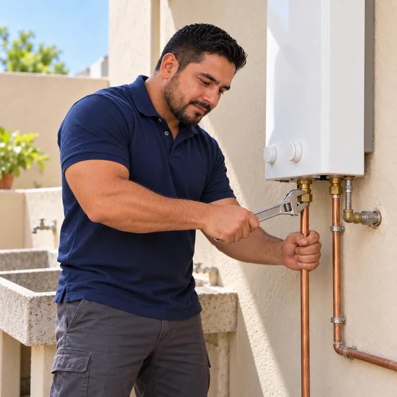

Técnico de boiler para calentadores de gas, solares, eléctricos y de paso. Diagnóstico completo, limpieza, refacciones originales y garantía.
WhatsApp: 52 667 392 2273 · Llamadas: 667 392 2273
Contactar por WhatsAppEsta página es para el mantenimiento preventivo: limpieza, revisión y ajuste cuando el boiler todavía funciona. Si tu boiler no calienta, no enciende, se apaga solo o gotea, lo que necesitas es la reparación de boiler, donde explicamos las fallas del boiler de depósito y qué define el costo. Si tu equipo es de paso, consulta también la guía de mantenimiento y encendido del boiler de paso.
Un boiler sucio consume hasta 30% más energía. El mantenimiento recupera su eficiencia.
Con mantenimiento anual, un boiler puede durar 10-15 años en lugar de 5-7 años.
Revisión de fugas de gas, válvulas de seguridad y conexiones para evitar riesgos.
Limpieza de quemadores y termostato para recuperar la temperatura adecuada del agua.
Limpieza de quemadores, serpentín, tanque. Revisión de válvulas, termostato, piloto. Pruebas de seguridad y combustión. Recomendado cada 12 meses.
Diagnóstico y reparación de fallas: no enciende, se apaga solo, agua fría, fugas, ruidos extraños. Cambio de refacciones con garantía.
Cambio de resistencias, termostatos, válvulas de alivio. Revisión de tablero eléctrico y conexiones. Limpieza de sarro en tanque.
Limpieza de quemadores y piloto. Revisión de flama (debe ser azul). Cambio de termopar, válvula de gas, termostato. Detección de fugas.
Limpieza de intercambiador de calor. Descalcificación con ácido especial. Ajuste de flama y presión de gas. Revisión de sensores.
Mantenimiento de calentador solar: limpieza de tubos de vacío, revisión de tanque térmico, desincrustación de sarro. Reparación de fugas y cambio de resistencia de respaldo.
Instalación completa de boiler nuevo: conexiones de gas certificadas, tubería de cobre, válvulas, tiro de gases. Cumplimiento de normativa.
Revisamos el estado general del boiler, conexiones de gas/agua, tiro de gases, válvulas de seguridad. Identificamos posibles riesgos.
Limpieza de quemadores, piloto, serpentín, tanque. Retiro de sarro, hollín y sedimentos. Uso de productos especializados.
Verificamos que la flama sea azul (no amarilla). Medimos presión de gas. Ajustamos aire y gas para combustión óptima.
Probamos termostato, termopar, válvulas, piloto automático. Revisamos que no haya fugas de gas o agua. Ajustamos lo necesario.
Te entregamos reporte del estado del boiler, vida útil estimada y recomendaciones. Si necesita refacciones, te cotizamos antes de cambiar.
No esperes a que deje de funcionar completamente. Un mantenimiento a tiempo previene reparaciones costosas y accidentes.
Agendar MantenimientoEstas fallas se atienden con el servicio de reparación de boiler; las listamos aquí para que sepas qué puede detectar una revisión a tiempo.
Causa: Termopar dañado, válvula de gas cerrada, falta de gas. Solución: Cambio de termopar, limpieza de piloto y verificación del suministro de gas.
Causa: Termostato descalibrado, quemadores sucios, resistencia quemada (eléctricos). Solución: Limpieza, ajuste o cambio de componente según diagnóstico.
Causa: Acumulación de sarro en tanque o serpentín. Solución: Limpieza profunda con descalcificador. En casos severos, cambio de boiler.
Causa: Válvula de alivio activada (exceso de presión), tanque corroído. Solución: Cambio de la válvula de alivio o cambio de boiler si hay corrosión grave.
Causa: Combustión incompleta por quemadores sucios o falta de aire. Riesgo: Monóxido de carbono. Solución: Limpieza urgente de quemadores y ajuste de aire.
Causa: Termostato defectuoso, termopar desgastado, válvula de gas dañada. Solución: Diagnóstico y cambio del componente fallido con refacciones originales.
El mantenimiento preventivo básico (limpieza, revisión y ajustes) se cotiza por el tipo de equipo: no es lo mismo un boiler de depósito que uno de paso o uno solar. Sobre eso influye el sarro acumulado —si lleva años sin servicio, la desincrustación toma más tiempo— y si aparece alguna refacción por cambiar, que se cotiza aparte y solo con tu autorización. El diagnóstico completo va incluido en el servicio.
Recomendamos mantenimiento anual (cada 12 meses) para uso residencial. En casas con agua dura o uso intensivo, cada 8-10 meses para prevenir acumulación de sarro.
Boiler de gas con mantenimiento: 10-15 años. Eléctrico: 8-12 años. Sin mantenimiento la vida útil se reduce a 5-7 años. El mantenimiento es inversión, no gasto.
Sí, muy peligrosa. La flama amarilla indica combustión incompleta que genera monóxido de carbono (gas tóxico). Requiere limpieza urgente. No uses el boiler hasta que lo revise un profesional.
Sí, usamos refacciones originales de la marca de tu boiler (Calorex, Rheem, Cinsa, Iusa, Bosch, etc.) para garantizar compatibilidad y durabilidad. Genéricas solo si autorizas.
Sí, damos mantenimiento a calentadores solares de todas las marcas. Incluye limpieza de tubos de vacío, desincrustación del tanque térmico, revisión de conexiones y verificación de la resistencia eléctrica de respaldo. Se cotiza según el número de tubos y el estado del tanque térmico.
Sí, 6 meses de garantía en mano de obra del mantenimiento. Las refacciones tienen garantía del fabricante (3-12 meses según pieza). Entregamos ticket y garantía por escrito.
Si ya no calienta, no enciende o gotea, es una falla y corresponde a reparación: se revisa el termostato, el piloto, el termopar y el sarro del tanque. El mantenimiento preventivo es para equipos que todavía funcionan y se hace para evitar que lleguen a fallar.
No. En el de depósito se limpian quemadores y piloto y se revisa el sarro en el tanque; en el de paso se descalcifica el intercambiador y se revisan los sensores de flujo. Para el de paso tenemos una guía específica de mantenimiento y encendido.
Contacta ahora por WhatsApp o teléfono. Diagnóstico completo y presupuesto sin costo adicional.
Somos especialistas en mantenimiento y reparación de boilers en Culiacán con más de 15 años de experiencia. Trabajamos con todas las marcas: Calorex, Rheem, Cinsa, Iusa, Bosch, Mabe. Técnicos con experiencia en instalaciones de gas.
Contáctanos por WhatsApp para agendar. Te haremos preguntas sobre tu boiler (marca, tipo, problema) para llevar las refacciones necesarias.
Enviar mensaje por WhatsApp